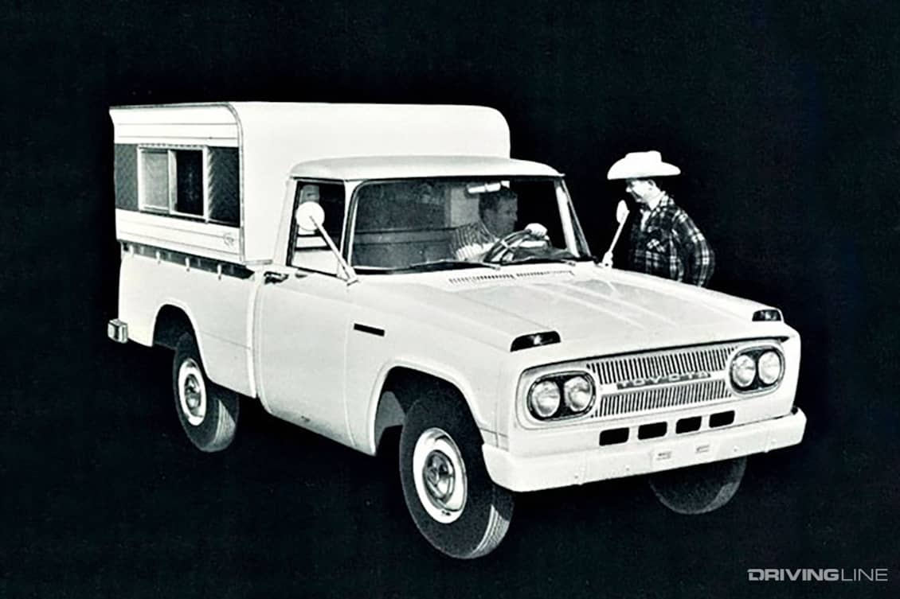

First Toyota Truck
Did you know Toyota's pickup truck history in America actually goes all the way back to the mid 1960s to a truck called the Toyota Stout. The stout was not developed for America like todays toyotas are. The Stouts that were imported to America between 1964 and 1969 were all powered by the 1.9 liter four-cylinder engine with a column-shifted four-speed manual transmission. For most people though, the Toyota Stout pickup will always be a historical obscurity, a nearly forgotten model. Yet one that represents a pioneering time for one of the world's biggest automakers in the land where pickups are king.
